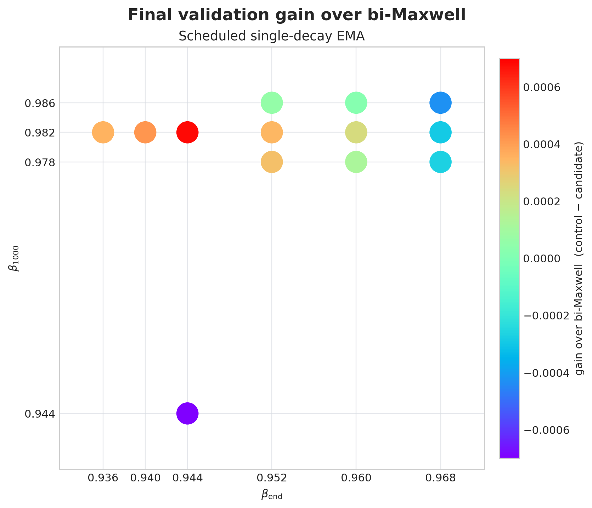
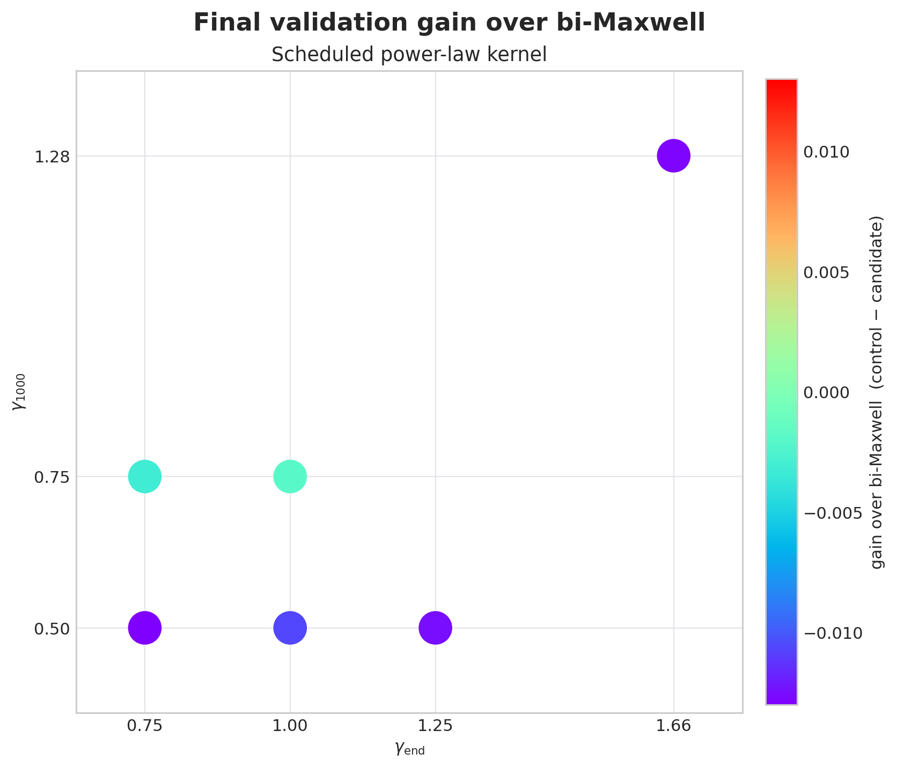

Momentum scheduling discovery
0.982 → 0.944 at
3.27768, gain +0.00068. On the new H100
calibration, the exact current-harness replay of PR357's scheduled K=8
kernel reached 3.27250, gain +0.00297
over its 3.27547 bi-Maxwell control. This is substantially larger than the
best single-EMA gain so far. The A100 0.982 → 0.940 endpoint
probe reached 3.27794, confirming that the local optimum is bracketed near
0.944. The power-law family remains noncompetitive.
New same-checkpoint controls
| Run | Hardware | Final loss | Gain over matched bi-Maxwell |
|---|---|---|---|
| bi-Maxwell calibration | 2×H100 SXM | 3.27547 | — |
| PR357 K=8, age 58 → 26, exact current-harness replay | 2×H100 SXM | 3.27250 | +0.00297 |
| beta 0.982 → 0.944, linear in mean age | 2×H100 SXM | 3.27449 | +0.00098 |
| beta 0.982 → 0.944, linear in log mean age | 2×H100 SXM | 3.27472 | +0.00075 |
| beta 0.978 → 0.944, linear in beta | 2×H100 SXM | 3.27517 | +0.00030 |
| beta 0.986 → 0.944, linear in beta | 2×H100 SXM | 3.27547 | +0.00000 |
| beta 0.982 → 0.940, linear in beta | 8×A100 | 3.27794 | +0.00042 |
| power law gamma 0.90 → 1.10 | 2×H100 PCIe | 3.27745 | −0.00198* |
| power law gamma 1.28 → 1.66 | 8×A100 | 3.29123 | −0.01287 |
| three-pole transfer match to that power law | 8×A100 | 3.29450 | −0.01614 |
The three-pole control matches finite-history DC gain, period-two response, and mean age at both endpoints. Power law beats it by 0.00327, but this only says the remaining shape matters inside a very bad descriptor-matched region. *The PCIe power-law delta uses the SXM calibration because a same-node PCIe bi-Maxwell fork has not been run; the margin is large enough to classify it as noncompetitive, but not as a precise paired effect.
Intern K-Maxwell audit
| Step | K=8, age 58 → 26 | K=2 exact bi-Maxwell | Raw improvement |
|---|---|---|---|
| 3150 | 3.27779 | 3.28073 | +0.00294 |
| 3200 | 3.27419 | 3.27656 | +0.00237 |
| 3210 | 3.27365 | 3.27594 | +0.00229 |
| 3250 | 3.27240 | 3.27451 | +0.00211 |
These are the Jerry-agent repository's historical H100 seed-0 logs: K=8 run and K=2 exact control. That historical pair is confounded by a 0.00490 pre-switch offset. The broader historical n=8 comparison implied approximately 0.00289 of additional post-switch separation. The new exact current-harness replay above independently lands at +0.00297, making the scheduled K=8 gain much more credible. PR359 K=6 and frozen-long/frozen-short PR357 controls are now running or queued to separate K, scheduling, and endpoint effects.
Endpoint sweeps

